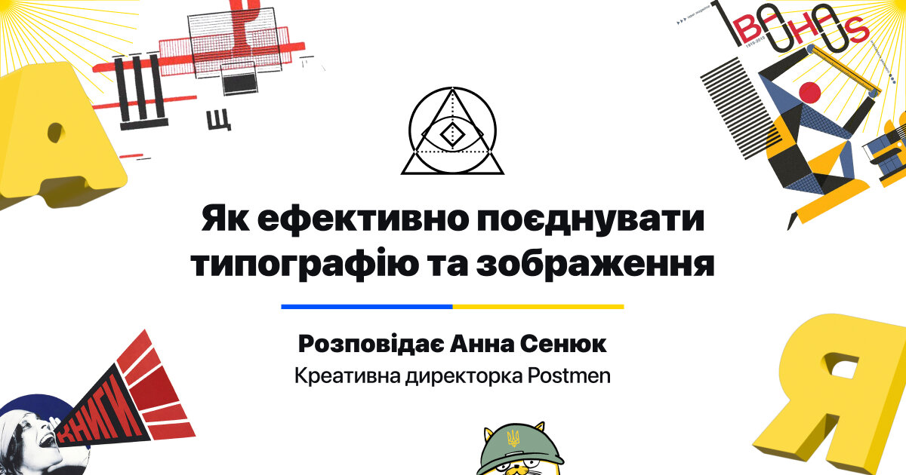

Як ефективно поєднуватитипографію та зображення
На початку квітня запустився Марафон Креативної Практики , цикл лекцій та майстер-класів від експертів українських креативних індустрій на підтримку Збройних сил України, благодійних фондів, волонтерів та всіх, хто наближає нашу перемогу.
Анна Сенюк , креативна директорка агенції Postmen , присвятила лекцію взаємодії з типографією та поділилася 12 ефективними методами злиття шрифту та зображення. Основні ідеї лекції викладені нижче, проте ви можете переглянути повний виступ за посиланням .
«Робота зі шрифтом і зображенням, а також інтеграція цих двох елементів є основою та базою гарного графічного дизайну.
Ці навички знадобляться фахівцям у будь-якій сфері: від книжкової графіки до брендингу.»
Ідея лекції натхненна діяльністю креативної пари
Nancy Skolos
та Tomas Wedell, які
займаються
дослідженням типографії.
Для більшого занурення в тему Анна Сенюк рекомендує ознайомитися з
книгою їхнього авторства
«Type, Image, Message: A Graphic Design Layout Workshop».
Методи ефективної взаємодії тексту та зображення
На першому етапі можна виділити 4 ключові методи інтеграції
типографії з зображенням:
розділення, злиття, фрагментація та інверсія
.
Кожному з них підпорядковуються ще три способи. Усі вони мають певні
властивості й допомагають вирішувати різні дизайн-задачі: від
привернення уваги до створення гармонійної композиції між
елементами.
Перший метод — розділення
Головне: типографія та зображення існують окремо один від одного.
У разі використання цього методу принцип поділу наділяє текст i зображення чіткою автономією (такого ефекту розділення можна досягти, наприклад, за допомогою додаткових графічних елементів).
Які бувають типи розділення?
- Шари (напис та зображення взаємодіють, але розташовані на різних незалежних шарах).
- Фрейми (як у вебдизайні — кадр є окремою зоною, у якій міститься певний вид інформації; спостерігається чіткий поділ на зону типографії та зону зображення)
- Маски (зображення обмежене маскою, що відокремлює його від шрифту та від іншого зображення).
- Посилити зображення типографією або навпаки, протиставити їх одне одному;
- Організувати ієрархію для спрощення сприйняття;
- Додати більше змісту та об’єднати різні сенси тексту та зображення;
- Створити серійність робіт (використовується в дизайні обкладинок журналів, приклад — The New Yorker ).
Другий метод інтеграції тексту та зображення — злиття
Головне: типографія та зображення об’єднуються в загальну структуру
Принцип злиття використовує силу синтезу та образу. Він стане в пригоді у випадку, коли потрібно створити цілісну та гармонійну картинку.
Типи злиття:- Оптична взаємодія (використання графікою та типографією взаємної перспективи, єдиного оптичного простору).
- Злиття — загальна площина (коли важко відокремити шрифти від зображення, можливе проникнення та накладання).
- Злиття — загальний рух (на типографію та зображення діють спільні сили чи закони фізики, або одне є продовженням руху іншого).
- Посилення концептуального напрямку;
- Створення складного нереального простору;
- Залучення глядача поглянути на певний предмет із несподіваної точки зору;
- Змішування протилежних між собою речей для створення міцної асоціації.

Ще один ефективний тип взаємодії — фрагментація
Головне: типографія та зображення зміщують, перекривають, руйнують цілісність один одного.
Принцип фрагментації виникає, коли текст і зображення порушують стан один одного. Елементи часто розрізнені, розділені або нерівномірно розподілені. Під час фрагментації головна роль дістається візуальній частині, а текстова переходить на задній план.
Які є різновиди фрагментації?- Іррегулярність (елементи розрізнені, розміщені хаотично, нерівномірно).
- Проникнення (текст проникає в зображення або одне витісняє інше).
- Перебільшення (завдяки розміру та кольору — зображення виділяється на тлі напису або навпаки. Ефекту перебільшення можна досягти будь-якою ознакою: розміром, пластикою чи кольором).
- Привернути увагу, зробити правильний акцент;
- Створити відчуття занепокоєння або хаосу;
- Передати ефект сюрреалістичності;
- Побудувати складне повідомлення з кількома сенсами.
Кінцевий тип інтеграції — інверсія
Головне: типографія та зображення міняються ролямиПринцип інверсії — це доволі специфічна категорія взаємодії з обміном ролями. Він посилює зв’язок між словом та образом і створює міцний візуальний союз, що здатний передати нові значення образу.
Інверсію поділяємо на такі типи взаємодії:- Реалізм (можливе використання крафту, фотографії або 3D-рендера, наприклад, зображення стає типографією, відбувається зміна ролей, графічна візуальна частина = текстовій).
- Структури (типографія є структурною частиною зображення, тож у випадку, коли типографія виконує роль зображення, вона має залишатися читабельною).
- Маски (типографія стає отвором, крізь який ми спостерігаємо за зображенням).
- Створити ефект несподіванки;
- Показати зв’язок між елементами;
- Надати композиції гармонійності.